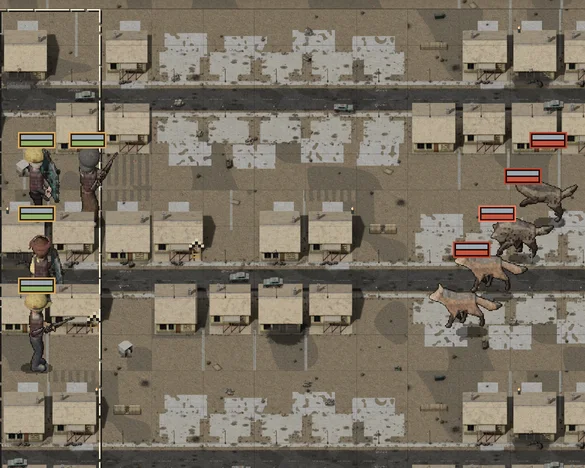
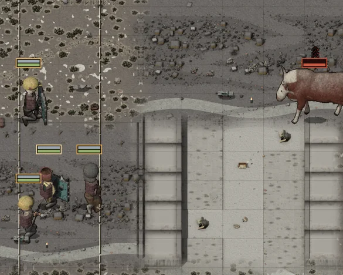
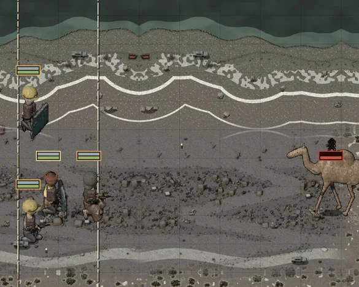
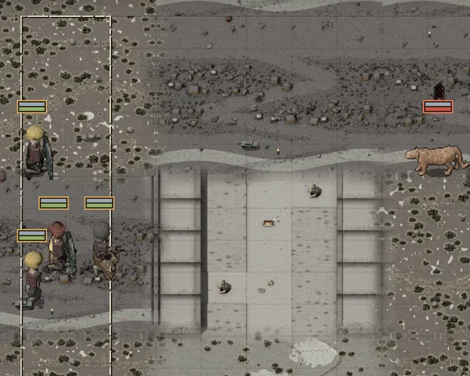
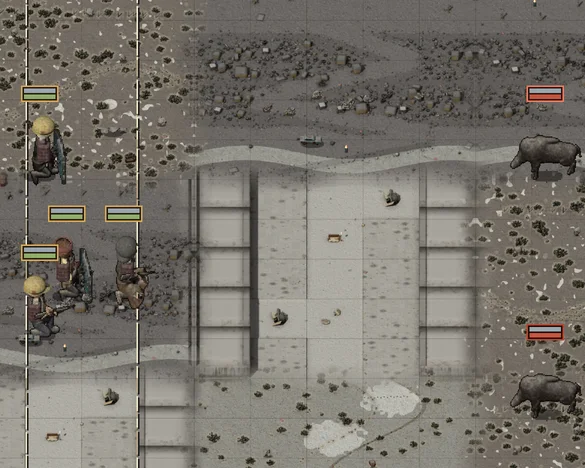

Before, every beast job gave you dire wolves and hyenas, wherever it was. Even the jobs that said "the dogs" or "the show's cats", and the big game lion, were wolves. Now the beasts come from the ground you fight on. These are real fights on your phone, with your four men for scale.
WASEVERY BEAST JOB, ANYWHERE

Dire wolves and hyenas. Every hunt, every place.
Measured on the map: every hunt rolled a wolf pack (6 in 10) or hyenas (4 in 10), and the fight dealt the same mix of both. No bull, camel, lion or hog ever came from a job.
NOWTHE BEAST COMES FROM THE PLACE

THE BULL: the parks, the open desert, the edges.

CAMELOPS: the open desert, the solar fields.

THE LION: the hills, and the Strip (the show's cats).

THE HOGS: the water, the edges, the lots.
WHAT YOU MEET, MEASURED363 HUNTS, 121 PLACES
Dogs (the streets)
76
Cave hyenas (the lots, the landfill, the freeway)
70
Wild bulls (the parks, the desert, the edges)
46
Dire wolves (the freeway, the airport, the hills)
44
Feral hogs (the water, the lots)
37
Mountain lions (the hills, the Strip)
33
Coyotes (the suburbs, the parks)
33
Camelops (the open desert, the freeway's edge)
24
Wolves, dogs and coyotes together: 42 in 100, never the only thing anywhere. A job that names its animal gives you that animal: "the wolves" are dire wolves, "the dogs" are dogs, "the hyenas" are hyenas, "the show's cats" and the big game's old lion are the lion.